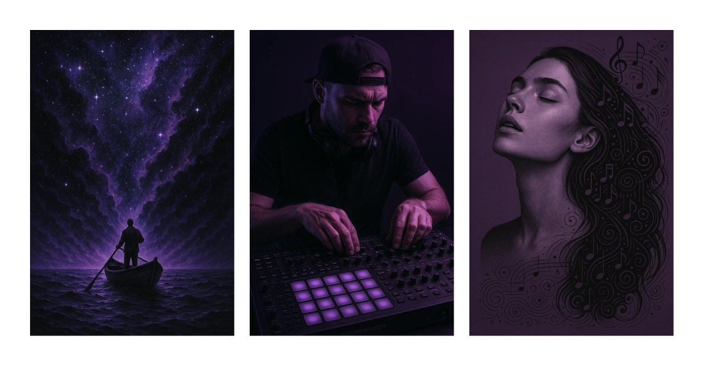
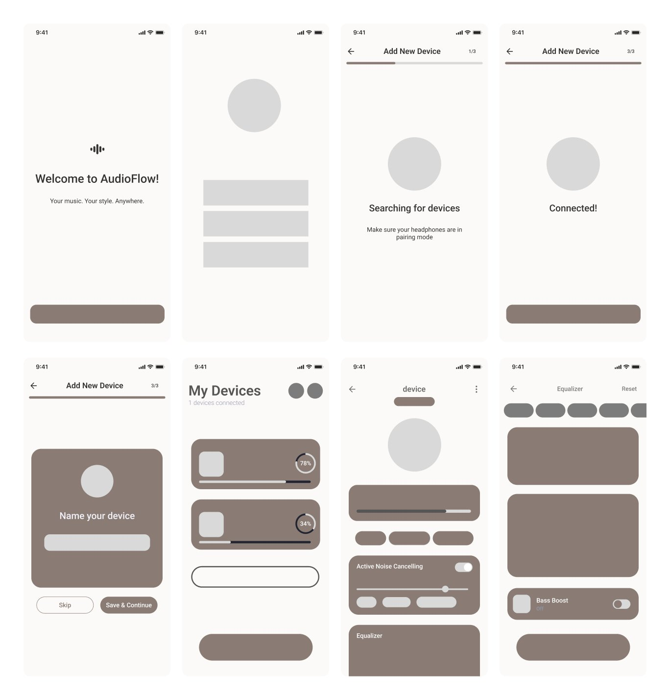
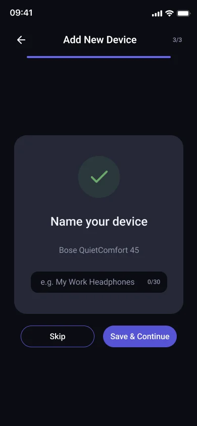
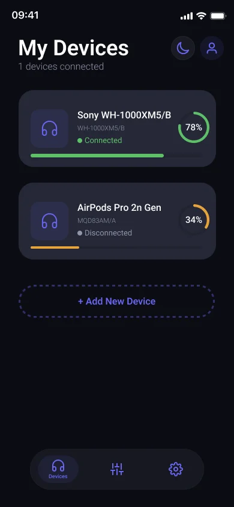
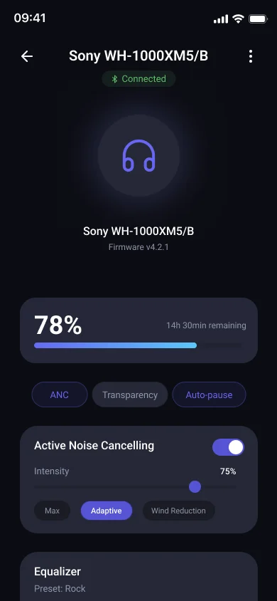
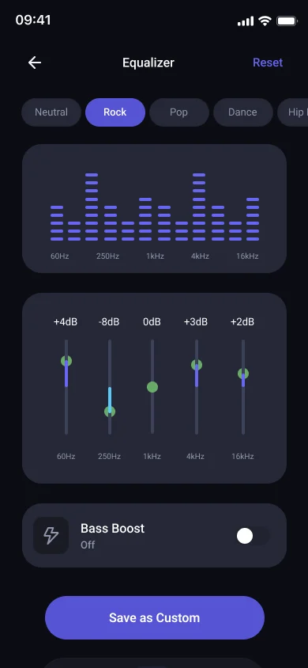
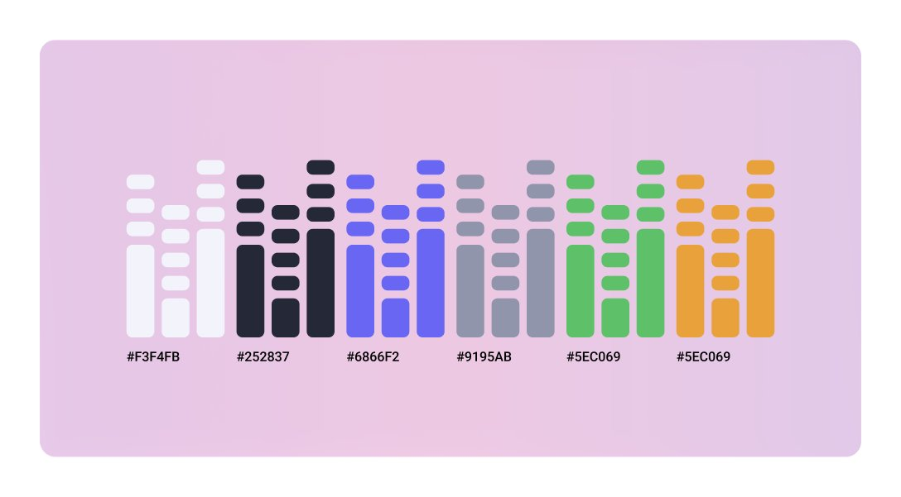

Earbud controls are scattered.
Battery, sound profiles, ANC and multi-device connections live in fragmented, unintuitive interfaces, a daily frustration.
Case study 02 · March 2025 · Mobile app
A companion app that brings every wireless-earbud control, from battery and sound to connections, into one calm, intuitive hub.

Battery, sound profiles, ANC and multi-device connections live in fragmented, unintuitive interfaces, a daily frustration.
Battery, connection and noise mode belong on the first screen; deeper tuning like EQ sits one tap away.
Guided pairing, device cards with live battery, one-tap ANC and Transparency modes, and a custom EQ with presets.
AudioFlow is a visual and interaction design project, so it started from mood and principles rather than user research.
I built a moodboard for a calm, tech-forward audio brand: night tones, studio light and violet. That set the visual system: Roboto for clarity at small sizes, and a palette built around violet #6866F2 with dark and soft neutrals.

Battery, connection and noise mode belong on the first screen.
EQ and settings sit behind the hub, not in front of it.
A 3-step progress bar makes pairing feel safe and finite.
Wireframes for the main flow: welcome, device search, pairing in three steps and naming, then the device hub, noise control and equaliser.

Each screen removes one daily friction.

A 3-step progress bar keeps pairing predictable, then lets you name the device.

A ring and a bar show charge and connection for every device.

ANC, Transparency and Auto-pause as chips; intensity as a slider.

Presets first, then custom bands and Bass Boost for those who want more.

An equaliser-inspired palette: violet #6866F2 as the accent, dark #252837 and soft #F3F4FB as neutrals, set in Roboto.
Live battery rings, one-tap noise modes and a custom equaliser with presets.
Click through the real flows. It runs right here in the page.
Test pairing and the equaliser with earbud owners: do people find modes and presets without help?
Check contrast of the violet accent on dark surfaces and the size of touch targets on sliders.
Design for lost connections, low battery warnings and pairing failures.